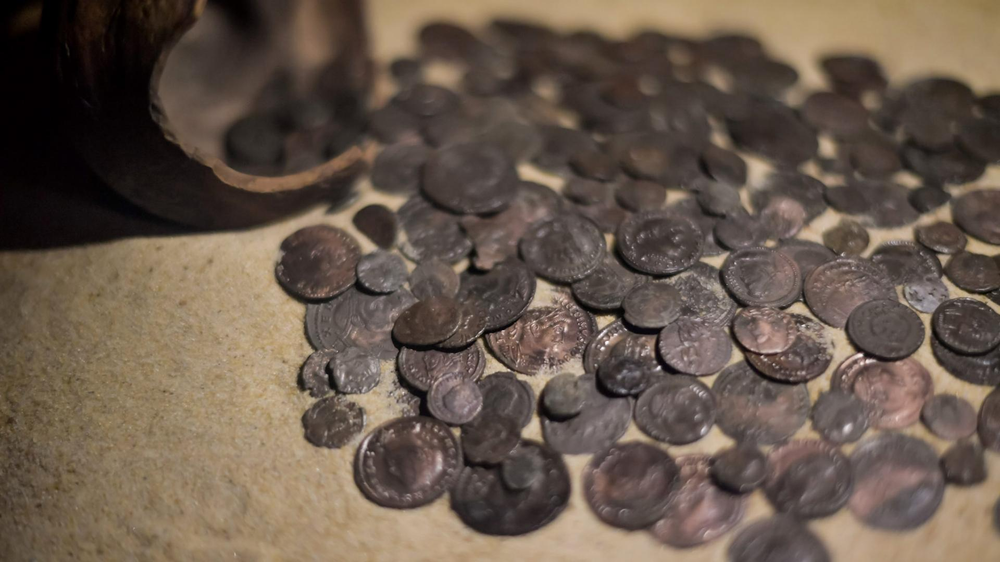

Situada en el centro del pueblo, el Museo presenta los resultados de 50 años de excavaciones realizadas en el lago de Sanguinet
por el centro de investigación (CRESS), en 5 sitios arqueológicos, hoy sumergidos. Su presencia
bajo el agua se explica por la formación gradual del lago en los últimos tres milenios. La visita
permite descubrir cerca de 450 objetos y comprender mejor la vida de los pueblos que vivieron en las
orillas del lago durante más de 2000 años. Diseñado en relación con el medio ambiente, el recorrido
pone de relieve el patrimonio, la arqueología subacuática y el medio ambiente, basándose en tres temas:
"El agua, la arena y el hombre". Los vídeos y los libros-juego proporcionan un enfoque interactivo.